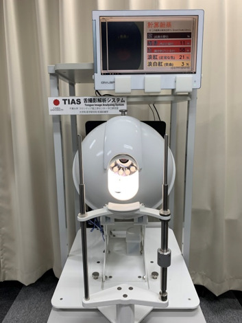

中口研究室ではコンピュータ画像処理技術を活用して 診断支援・治療支援・生体計測に関する研究を行っています。
研究テーマ
治療支援

医療訓練システム

舌画像の計測・解析
画像診断支援

研究業績・学会発表等の詳細が知りたい方はこちらへ
中口研究室ではコンピュータ画像処理技術を活用して 診断支援・治療支援・生体計測に関する研究を行っています。
研究業績・学会発表等の詳細が知りたい方はこちらへ
 教授
教授千葉大学 西千葉キャンパス フロンティア医工学センター(CFME) A棟 2階：JR西千葉駅から徒歩約8分
医工学コース３年生の皆さん，他大学から大学院入学を希望する皆さん，医工学研究に関心のある企業の方々へ 研究室見学，研究相談は随時受け付けています。
千葉大学フロンティア医工学センター 中口研究室
住所：〒263-8522 千葉市稲毛区弥生町1-33
電話/Fax： 043-290-3296（直通）
E-mail：nakaguchi の後に @faculty.chiba-u.jp を付けてください。